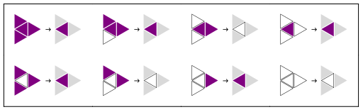
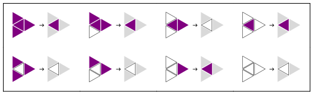
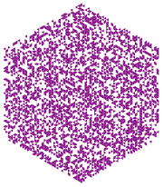
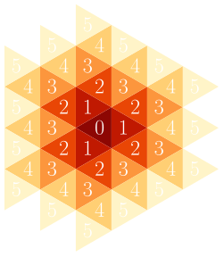
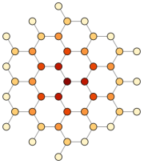
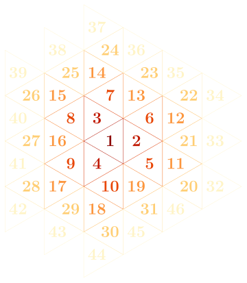

Abstract
This website is about Triangular Automata (TA), which stands for cellular automata in the triangular grid. On this page, you will find an introduction to TA, starting from the basics and building up to some more advanced concepts. Most pictures here are clickable. In the gallery, all Elementary Triangular Automata (ETA) can be explored in many ways. Use the control panel at the bottom of the page and follow your curiosity. Some rules are stromboscopic so, if you are epilleptic, avoid animations. You can learn more about how these results have been computed and download the Mathematica package by clicking on code. Do not hesitate to contact me if you want to know more about this project.
Table Of Contents
Introduction
Cellular Automata are mathematical objects composed of two elements:
- a grid whose cells hold states defined at time $t=0$
- a local and deterministic rule iteratively applied to evolve the grid to any discrete time step $t\in\mathbb{N}$
ETA grid cells hold only binary states. Each cell will thus either be:
- ‟alive” and colored purple , with a state $s=1$
- ‟dead” and colored white , with a state $s=0$
 |
|---|
A rule must specify for each of these configurations if the cell will be alive or dead at the next time step. Here is an example of such a rule (click on it to see what it does to a single alive cell):
Because there are only $2^8=256$ possible ETA rules, they can be considered as the two-dimensional counterpart to Wolfram’s Elementary Cellular Automata[x]. Furthermore, the triangle is tiling 2D space with the smallest possible number of neighbors per cell. ETA are thus the most basic 2D cellular automata and have a fundamental aspect in this regard.
In the following sections, we are going to find a way to index the rules, learn more about ETA and their behavior, see how they can be efficiently implemented using graph theory, and much more.
Rules
In this section, our goal will be to index all 256 rules by a unique rule number $n$, in the Wolfram Code[x] style. First, let's give every local configuration a number. The configuration number of a cell will be the number of its alive neighbors, plus 4 if itself is alive.
|
|||||||
|---|---|---|---|---|---|---|---|
| 0 | 1 | 2 | 3 | 4 | 5 | 6 | 7 |
A rule $R$ tells us what the state of a cell will become depending on its local configuration. It is thus a map from configuration space to state space. $$R: \{0,1,2,3,4,5,6,7\}\rightarrow\{0,1\}$$
Like in the Wolfram Code, we can use rule numbers such that in their binary form, they display the behavior of the rule. $$n=\sum_{c=0}^7 2^c R(c)$$ Starting from the right, a rule number's binary digits indicate the future state for each configuration as they have been ordered. For example, if a cell is in configuration $c=0$ and the least significant digit of the rule number is 1, then it will become alive at $t+1$. Similarly, if it is in configuration $c=7$ and the most significant digit of the rule number is 0, then it will be dead at $t+1$. Can you find the binary number of the following rule?
The number of this rule is $11010010_2=210$. If you didn't guess it, do you see now where it appears in the plot above?
Behavior
Now for the fun part! Let's look at what these automata do. What is especially interesting, is to see what happens under ETA rules to a single alive cell. So, unless specified otherwise, images that follow come from this starting point.
Beauty
One of the most striking aspect of these automata is their beauty. So let's simply enjoy some neat examples first.


Chaos
Chaos is one of the key features of complex systems. In mathematics, chaos is a term used to characterize dynamical systems with a strong dependance on initial conditions. This means that small difference in the initial conditions is going to get amplified to the point that you end up with very differents results. For instance, here are two random starting grids completely similar except for the central cell which is alive in (1) and dead in (2).|  | |
|---|---|
| (1) at $t=0$ | (2) at $t=0$ |
After 512 time steps of evolution with rule 53, eventhough they started looking almost indistinguishable, they have become completely different. Don't they look a bit like Antarctica?
 |
|---|
| (1) at $t=512$ |
 |
| (2) at $t=512$ |
Fractals
Some rules produce similar structures across space, time and, more interestingly, scale. Self-similarity across scales is a common property of fractals and complex systems more generally. We call these structures scale-free. In the following examples, you can see the same pattern repeated at different scales around the origin.


Self-Reproduction
One of the initial motivations[x] for comming up with cellular automata, was to create mathematical models of self-reproduction. Interestingly, 4 of the 256 ETA rules naturally reproduce any finite pattern given as initial condition: rules 85, 90, 165 and 170. A proof[x] of self-reproduction base on path-counting already exists for rule 170. Similarly spirited proofs could probably be proposed for the others.
rule 170 from a recognizable starting point
Noise
Some rules seem to generate a pretty good noise. For example, if we pick a simple starting point without symmetries, rule 37 will usually turn it into an expanding circle with a random looking interior.Simple asymmetric starting point
Result at $t=1024$ with rule 37
Identity
There also is an identity rule which lets any grid unchanged: rule 240.
Region Of Influence
Did you wonder why most of the previous results have an hexagonal shape? The answer is quite simple: the region of influence of single cell expands hexagonlly. In physics terms, in the trianguar grid, light cones are hexagonaol pyramids.
 Light cone displayed by rule 254 in space-time view
Light cone displayed by rule 254 in space-time view
The following plot shows the time at which the different layers will be impacted by the center cell.
Graph Theory
To think mathematically about TA and implement them effisciently, we are going to use a framework based on graph theory and linear algebra, devellopped in a previous work[x]. In this framework, the triangular grid is thought of as a growing graph. This graph will be expanded with along the region of influence at each time step to mimic an infinite grid.
Here is how the cells are going to be ordered: counter-clockwise, with the first vertex of each new layer placed on the south-east diagonal.
The interest of seeing the triangular grid as a graph, is that computing its evolution is made quite easy by properties of its adjacency matrix $\mathcal{A}$ and state vector $\mathcal{S}$. Every vertex $v$ of this graph will hold a state $s(v)$. The neighborhood $N(v)$ of a vertex is defined as the set of vertices which are adjacent to it. We thus have: $$ \begin{align*} \mathcal{A}_{ij}&= \begin{cases} 1 & \text{ if } v_i\in N(v_j) \\ 0 & \text{ otherwise} \end{cases} \\ \mathcal{S}_i&=s(v_i)\in\{0,1\} \end{align*} $$ The configuration $c(v)$ of a vertex, as indexed previously, can be expressed as follows: $$ c(v)=4\times s(v)+\sum_{i\in N(v)} s(i)$$ As explained earlier, each rule $R$ is a function that takes in the configuration of a vertex at time $t$ and returns its state at $t+1$ : $$ \begin{aligned} & R: [[0,7]]\rightarrow\{0,1\}\\ & R\big(c_t(v)\big)=s_{t+1}\big(v\big) \end{aligned} $$ Evolving the state of the grid is where this framework pays off the most. The environment will be simulated by using two layers around the region of the influence of our initial structure. The computed grid will thus contain $t+2$ layers. Updating the state of the grid will come in four steps.
- First, a layer is added with the same state as the last vertex.
- Second, a configuration vector $\mathcal{C}$ is computed ($o$ is the order of the graph here). $$ \mathcal{C}= \begin{pmatrix} c(v_1) \\ \vdots \\ c(v_o) \end{pmatrix} =4\times\mathcal{S}+\mathcal{A}\cdot\mathcal{S} $$
- @ being the operator applying a function to every element of a vector, the state vector $\mathcal{S}$ is then updated as follows: $$ \mathcal{S}=R\,\text{@}\,\mathcal{C} $$
- Finally, the state of all vertices of the last layer (created in step 1) is set to the value of the last vertex of the now penultimate layer. This removes the artefacts coming from the edges of the computed grid.
Final Thoughts
References
Cite This Website
@misc{TriangularAutomata,
title = {Triangular Automata},
author = {Paul Cousin},
url = {https://paulcousin.github.io/triangular-automata}
}